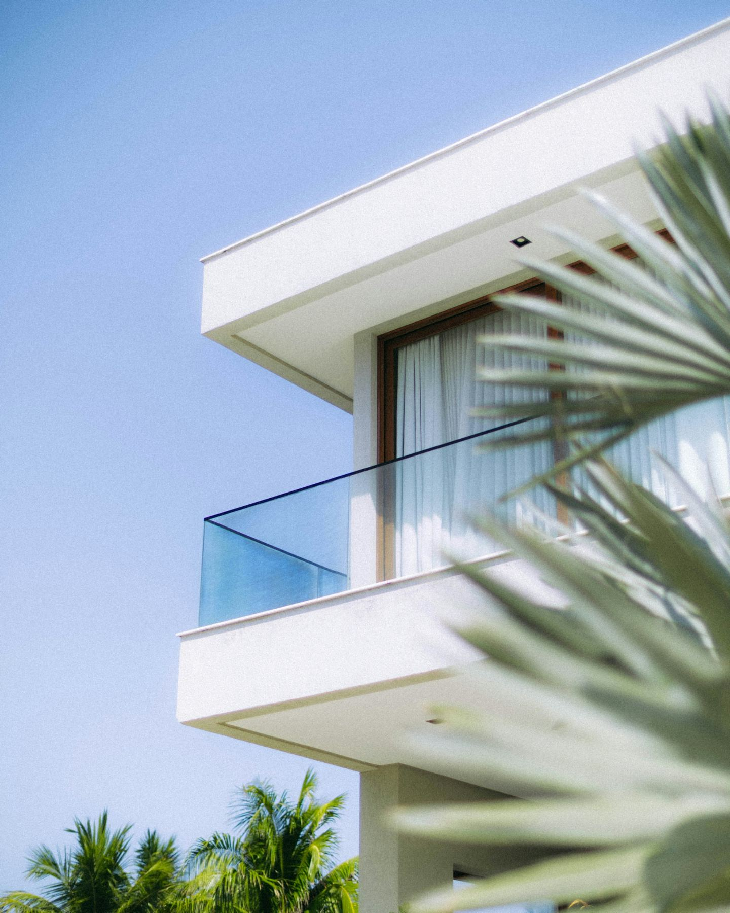
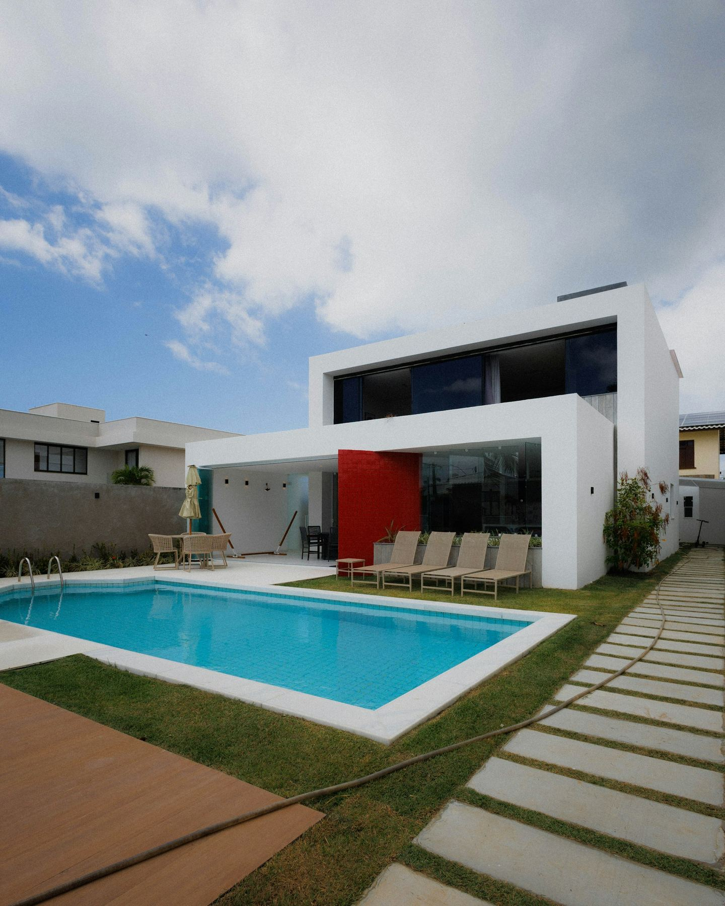
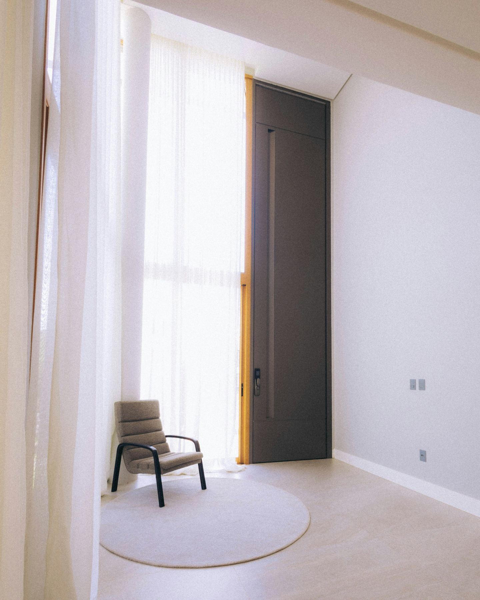
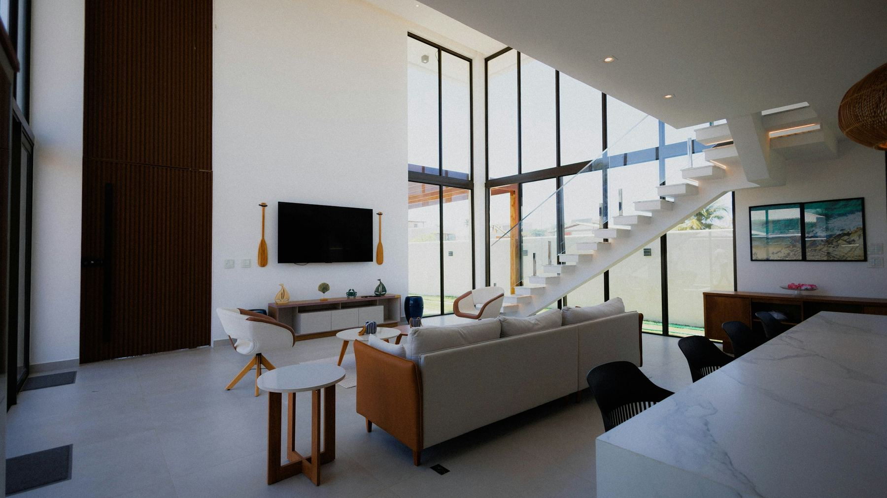
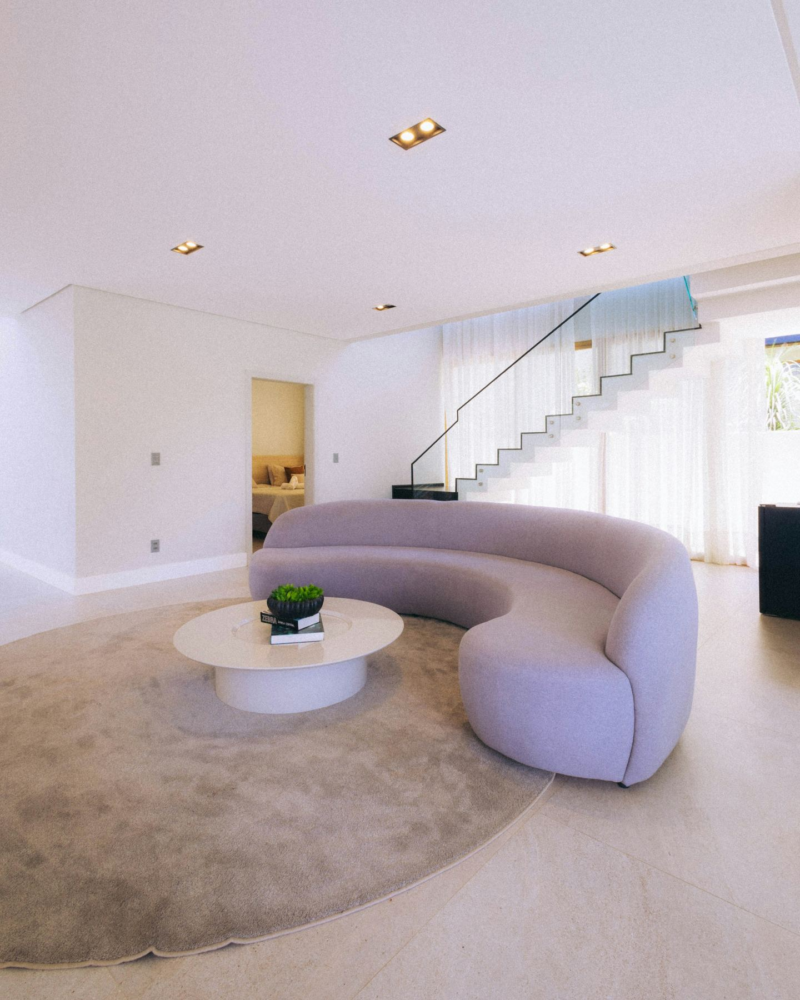
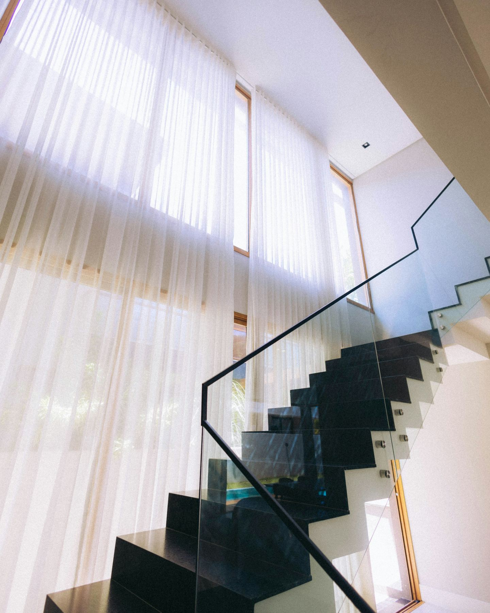
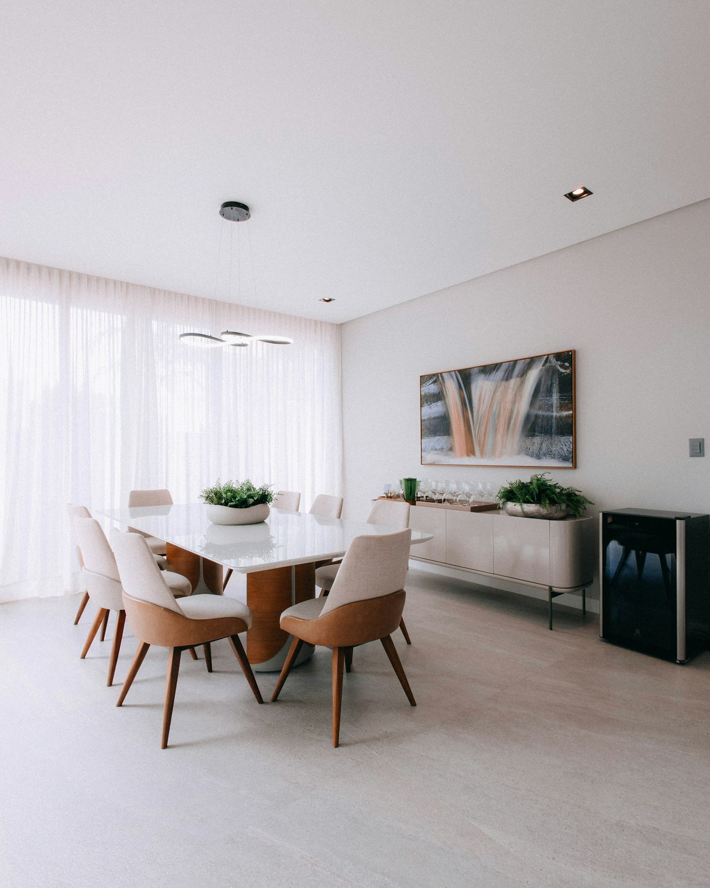
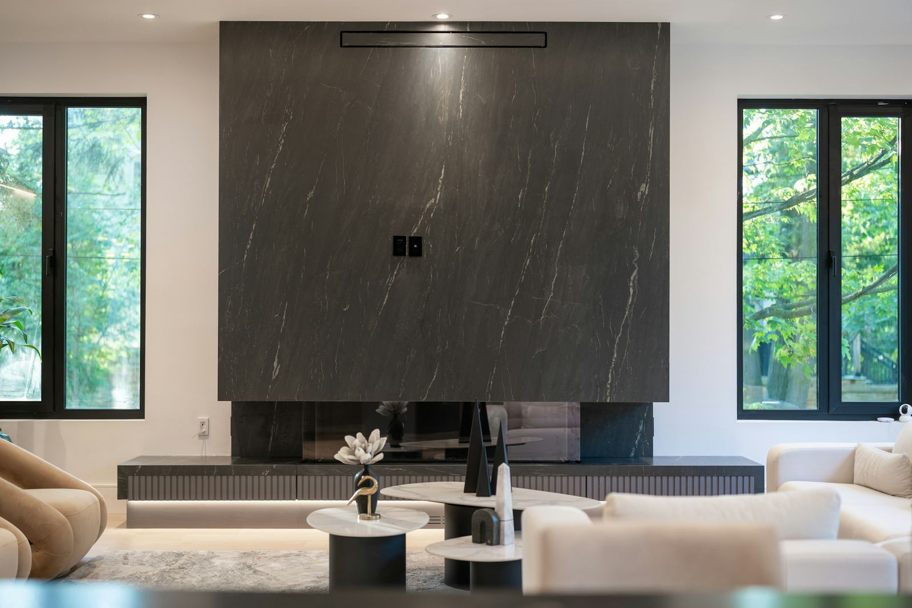

A · La fachada
Blanco contra el cielo.
Volúmenes blancos, balcones de vidrio y aleros que dan sombra a las ventanas en las horas de más sol.
Sitio de ejemplo · Marca ficticia · Hecho por 16 Ball Creations

Proyectos / Casa Alisio
Una casa blanca para vivir afuera, frente al mar.
01 — El proyecto
La casa se abre al patio y a la piscina: la sala sube a doble altura y la brisa la cruza de lado a lado, sin aire acondicionado la mayor parte del año.
02 — Recorrido

A · La fachada
Volúmenes blancos, balcones de vidrio y aleros que dan sombra a las ventanas en las horas de más sol.

B · El acceso
Una puerta de piso a techo y una sola butaca: el acceso prepara la escala de lo que viene.


C · La doble altura
La sala sube dos pisos y se llena de luz filtrada por cortinas de lino; un sofá curvo ordena el centro sin cerrar el paso.

D · El detalle
Huellas negras que parecen flotar junto al vidrio.

E · Comedor y terraza
El comedor se abre a la terraza y a la piscina para alargar las comidas hasta que cae la tarde.
03 — Galería · 8 imágenes
Una casa para vivir afuera sin dejar de estar adentro.

Siguiente proyecto · 03 Casa Nogal Ver todos los proyectos →Agenda tu cita